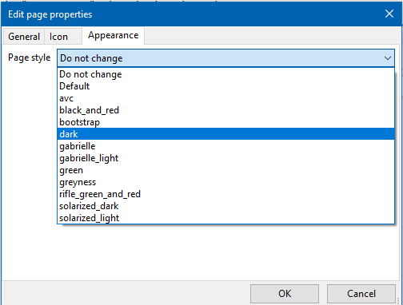

OutWiker allows to set pre-defined styles that change look of wiki-type and HTML-type notes. In order to set a style for specific note right-click its name in the tree, select "Page prperties..."; switch to the "Appearance" and select the style.

Styles for the pages can be stored in the following directories:
- In the directory styles near the executable file.
- In the directory styles in the directory .outwiker, which, in turn, is located in the user's home directory (under Linux it ~/.outwiker/styles).
When you install the style pages are copied to the directory the file __style.html and sub-directory __style, if it exists in the selected style. Thus, solving the problem, if one computer has a certain style, but on the other - no. At the same time, this approach allows us to individually adjust the styles for each page. When setting the default style file __style.html and __style subdirectory are deleted.
Below is a screenshot of the same page with different styles.

Default style |

"Black_and_red" style |

"Dark" style |

"Green" style |